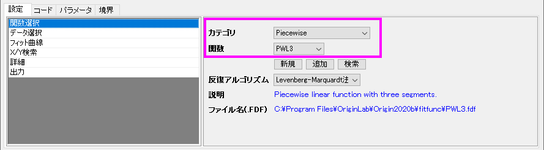
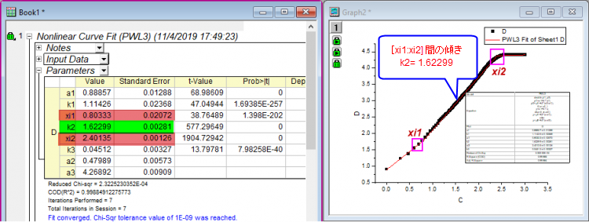

FAQ-1024 両対数軸グラフで部分的に線形フィットをしたい場合はどうすればよいですか？
PartlyLinearFit-on-LogScale
最終更新日：2019/11/04
両対数軸グラフで部分的に線形フィットをしたい場合は、次の方法が利用できます。
入力セグメントの正確な範囲が既にわかっている場合は、直接図上値によるフィットを実行します。
- セグメントをデータセレクタを使用して選択、または線形フィットダイアログの入力タブで入力範囲を編集します。そして線形フィットダイアログのフィット制御タブで図上値によるフィットにチェックを入れます。
- OKボタンをクリックして線形フィットを実行します。
入力セグメントの正確な範囲がわからない場合は、スケールを線形に変換し、区分フィットを実行します。
- ワークシート上で列値の設定機能を使用して、列Aと列Bの両方をlogスケールから線形スケールに変換します。例えば列AのF(x)= セルに log(A) と入力します。
- NLFit（非線形曲線フィット）ダイアログを開き、Piecewiseカテゴリ内のPWL3またはPWL2関数を選択して曲線全体に対して区分フィットを実行します。
- 
- フィットの結果表に、転換点のX座標（下図のxi1やxi2）および対象セグメントの傾き（下図のパラメータk2）が表示されます。
- 
- X座標値をlogスケールに変換します。x1=10^(xi1)、x2=10^(xi2)のように計算します。
- このX座標値を使用して、1つ目の方法のように「図上値によるフィット」を実行できます。
キーワード：両対数軸, 部分フィット, 線形フィット, 図上値によるフィット, セグメントをフィット, logスケール, 部分的にフィット, 区分フィット